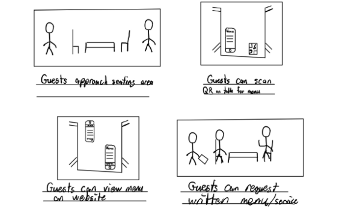
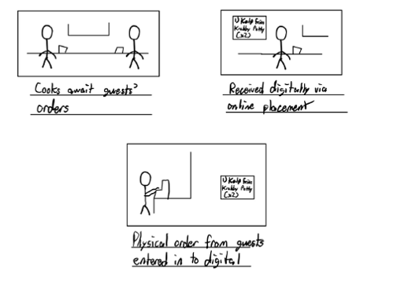
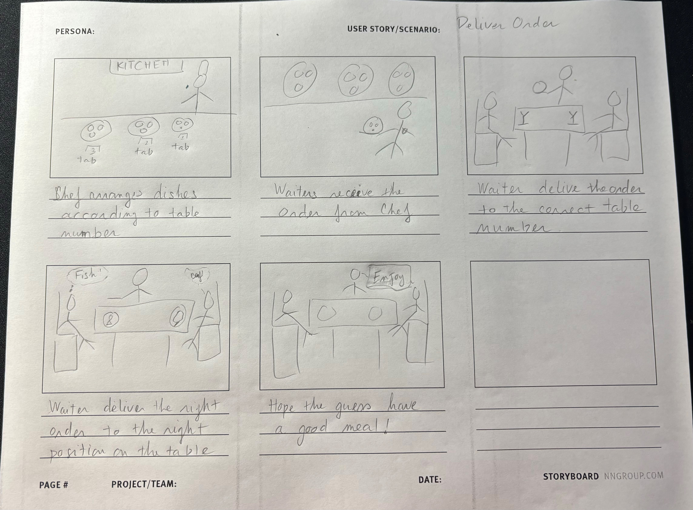
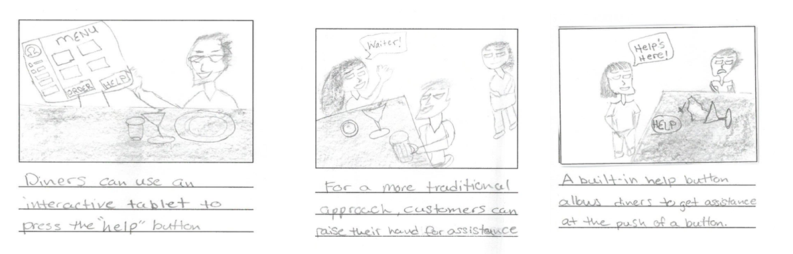
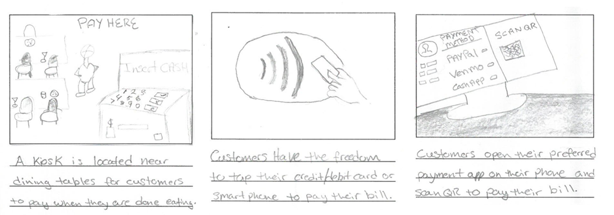
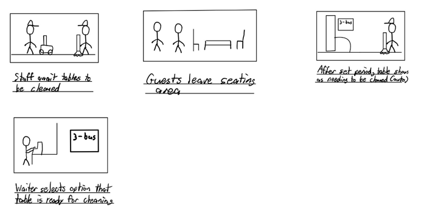

Thu Tran
MT Engineer II – Dupont Vespel® Pencader
Hobbies: Family, Travel, Photography, Reading, Swimming
Introduction
EasyEats is designed to help enhance the restaurant experience, providing services in booking and order management to help ease daily operations for the staff and provide convenience to the consumer. The application would be available on the iOS and Android app stores, as well as having a web interface and built-in functionality with tablet devices. The convenience will allow guests to avoid long waits from manual ordering and allow conveniences of order management from the restaurant’s side. This also incorporates easily into the restaurant’s environment, allowing for process management to be streamlined for cleaning, food preparation, and reservation booking.
Storyboards
We are planning to use multiple types of graphic organizers such as storyboards and workflow to show our flexibility. First of all, we want to introduce to you our reservation process via web system, phone, and in-person. According to figure below, the customers need to make an appointment at our restaurants. They can start at the first step such as “Guess want to make reservation”. They will search our restaurant information and pick the approach to reserve their table such as in-person, by phone call or website application. If they choose our website, the customers need to fill in their information via a web form by themselves. If they choose in-person and phone, the staff will fill in the customer information via our web form. Next step, the customers need to choose the available tables number and available time. The system will ask the confirmation, update our database, and send the confirming letter to customers with time and table number. The customer may cancel the reservation via phone or via website before 24 hours of reserved time. After approving cancellation by system, the customers will receive cancelled email. The system will update the database and close the reservation. Our system also checks the expiration of date and time. If the customer does not show up on time, the system will send the canceled letter and update to our system. If customers arrive on time, the staff will check their reservation. If the customers have the reservation, the staff will take a tour to their table. If their customers do not have the reservation, the staff need to check our waiting list. If the waiting list is full, the staff will offer the customers to make the reservation via website or with our staff directly the other day. If the waiting list is less than 30 positions, the staff will offer the customers to wait until their turn.

When the customers sitt their table, they can choose how to see our menu such as scanning the QR code to view our menu or asking the written menu with our staff.
Our chefs are waiting for guest’s order. We also have two approaches to collect order by digital form via order system or written form via staff. The advantage of order system is faster and easy for management, but their cost is high for installation and implementation. The advantage of physical order is comfortable and cheap, but it is hard for data entry and management.
After receiving the order, our chefs will prepare the dishes. After finishing, the chef will arrange them according to table on the kitchen countertop. The waiters will deliver the order to the right table and to the right position. Our staff will wish our customers a good meal: “bon appétit”. Figure 9 to 13 are story boards to indicate these steps.
When customers are seated at the table, they may need our staff for support. They have three options to call our staff’s attention such as digital calling, manual calling like a hand raising, and help button. The figure on the left side indicates that a digital screen is set up on each table to serve our customers. On the screen, we include the menu, order button, and help button. The customer can use it when they need help. The figure at the middel indicates the customer can call our waiter for help by raising a hand and speaking loudly. Figure on the right side indicates that our table has a physical help button on the table like a bell. When the customer needs it, they can push the button.
For payment services, the resturant offers three methods including wireless payment, QR code payment, and kiosk payment. the figure on left side indicates the kiosk is located near the dining tables, so the customer can use it after eating. The customer can choose the payment on our screen service at their table such as wireless payment with their credit card, Apple Pay or Android Pay, and QR code payment. the figure at the middle indicates the wireless payment with their credit card. The figure on the right side indicates the customer can use their phone to scan the QR code to pay their bill.
We have some staff who are waiting for cleaning services. After the customer left, it indicates the staff will set the cleaning time and the status “To be Clean” for the table on our cleaning system. After that, the staff will change the status “Ready to clean” for the table. It will help our reservation system to recognize that the table is ready for customers.
